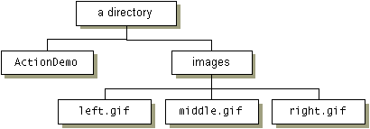

Feedback Form
|
|
Start of Tutorial > Start of Trail > Start of Lesson |
Search
Feedback Form |
The table that follows lists every 1.1/1.2 example in the Using Other Swing Features lesson, with links to required files and to where each example is discussed.
Note: These examples use the Swing 1.1 API, which is supported by J2SE 1.2 and compatible releases, as well as JDK 1.1 + JFC/Swing 1.1. To see more up-to-date versions of these examples that can be launched using JavaTM Web Start, see the list of 1.4 examples.
Examples are applications unless noted otherwise. See Getting Started with SwingYou can get the source, image, and other files required for all these examples by downloading the Tutorial Examples bundle
, which contains the files in the correct hierarchy. If you download an individual example, take care to have all the necessary files in the proper hierarchy when you compile and run it. For example, many examples expect their image files to be in a directory named
imagesthat's in the same directory as the example's class files. Here's a typical setup:
Source Files Image & Other Files Where Described AccessibleScrollDemo.java
Rule.java
Corner.java
ScrollablePicture.javayoungdad.jpegHow to Support Assistive Technologies ActionDemo.javaright.gif,middle.gif,left.gifHow to Use Actions BorderDemo.javaleft.gifHow to Use Borders CustomIconDemo.java
ArrowIcon.javamiddle.gifHow to Use Icons IconDemoApplet.java
SwingWorker.java
Photo.javaright.gif,left.gif,dimmedRight.gif,dimmedLeft.gif,stickerface.gif,lainesTongue.gif,kathyCosmo.gif,ewanPumpkin.gif,
To run the applet:IconDemoApplet.html
To view the <APPLET> tag:IconDemoApplet.atagHow to Use Icons
|
|
Start of Tutorial > Start of Trail > Start of Lesson |
Search
Feedback Form |
Copyright 1995-2005 Sun Microsystems, Inc. All rights reserved.
{kind=link}
{kind=link}
{kind=link}
{kind=link}
{kind=link}
{kind=link}
{kind=link}
{kind=link}
{kind=link}
{kind=link}